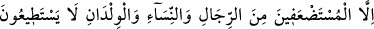
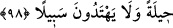

22/66) âyetlerinde can alma işinin Allah Teâlâ’ya isnâd edilmesi, Allah’ın ölümün
yaratıcısı olması sebebiyledir. Müslümanlıklarını açıklamakta, namaz ve benzeri
hükümleri yerine getirmedeki kusurlarını kendilerine kabul ettirmek ve bu sebeple
onları azarlamak için “Ne işte idiniz!” Dîniniz için neler yaptınız! “dediler.”
Bu âyet, Mekke’de müslüman olan ve hicret farz olduğu zaman oradan hicret etmeyen
kişiler hakkında inmiştir. Hz. Peygamber (s.a.v) Medîne’ye hicret ettikten sonra Allah
Teâlâ hicret etmeyenlerin müslümanlığını kabul buyurmuyordu. Bu husus Mekke’nin
fethinden sonra Hz. Peygamber (a.s)’ın “Fetihten sonra hicret yoktur.”[126] hadîsiyle
nesh edilmiştir. Allah Teâlâ îmân edip de hicret etmeyenler hakkında şöyle buyurmuştur:
“Îman edip de hicret etmeyenlere gelince onlar hicret edene kadar, onların
velâyetinden size bir şey yoktur.” (Enfâl, 8/72)
Sanki “Cevap olarak ne dediler?” denilmiş, cevâben şöyle buyurulmuştur: “Bunlar”
da yaptıkları kusurları açıkça kabul etmeyerek ve mazeret beyan ederek “Biz
yeryüzünde” Mekke’de “çâresizdik” onların arasında dînî görevlerimizi yerine
getirmekten âcizdik “diye cevap verdiler.”
Onların bahanelerini boşa çıkarmak ve onları azarlamak için “Melekler de: Allah’ın
yeri geniş değil miydi?” Medîne’ye ve Habeşistan’a gidenlerin yaptığı gibi dînî
görevlerinizi yapabileceğiniz diğer bir bölgeye “Hicret etseydiniz ya!” dediler.”
Rivâyete göre zikredilen bu tâife, müşriklerle birlikte Bedir’e gelmişler ve orada
öldürülmüşlerdir. Melekler onların yüzlerine, arkalarına vurmuşlar ve bu sözü onlara o
zaman söylemişlerdir. O halde kâfirlerin ordusuna dâhil olarak onlara yardım ettikleri
için bu, meleklerin onları azarlayıp paylaması demek olur. Onlar da cevap olarak
kendilerine kafirler tarafından baskı yapıldığını ve Bedir savaşına zorla getirildiklerini
söylemişlerdir. Bunun üzerine melekler onlara hicret ederek onların ellerinden
kurtulabileceklerini söylemişlerdir.
“İşte onların” yâni, bu çirkin durumları bildirilen kimselerin dünyada barınağı küfür
diyarı olduğu gibi farz olan görevlerini terketmeleri ve kâfirlere yardım etmeleri
sebebiyle ahiretteki “barınağı da cehennemdir.” Cehennemin onların barınağı olması,
önceki cümlede ifâde edilen onların bu hususta hiç bir özürleri olmamasının netîcesidir.
“Orası” yâni, varacakları yer olan cehennem “ne kötü bir gidiş yeridir.”
98- Yalnız hiç bir çareye gücü yetmeyen ve hicret için yol bulamayan gerçekten
zayıf erkekler, kadınlar ve çocuklar hariç.
“Erkekler, kadınlar ve çocuklardan (gerçekten) âciz olup hiçbir çâreye gücü
yetmeyenler, hiçbir yol bulamayanlar müstesnadır.” Bunlar, nefislerine zulmetmiş